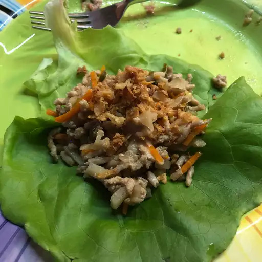

Asian Lettuce Wraps

Description
These lettuce wraps are bursting with Asian flavors, delicious, and a great idea for entertaining or a family-style meal.
To serve, allow each person to spoon a portion of the beef mixture into a lettuce leaf.
Wrap the lettuce around the beef
like a burrito and enjoy!
Ingredients
- 16 Boston Bibb or butter lettuce leaves
- ¼ cup reduced-fat sour cream
- 1 pound lean ground beef
- 1 tablespoon cooking oil
- 1 large onion, chopped
- ¼ cup hoisin sauce
- 2 cloves fresh garlic, minced
- 1 tablespoon soy sauce
- 1 tablespoon rice wine vinegar
- 2 teaspoons minced pickled ginger
- 1 dash Asian chile pepper sauce, or to taste (Optional)
- 1 (8 ounce) can water chestnuts, drained and finely chopped
- 1 bunch green onions, chopped
- 2 teaspoons Asian (dark) sesame oil
Steps
- Rinse whole lettuce leaves and pat dry, being careful not to tear them; set aside.
- Heat oil in a large skillet over medium-high heat. Add beef; cook and stir until browned and crumbly, 5 to 7 minutes.
Drain and discard grease; transfer beef to a bowl. Add onion to the same skillet; cook and stir until just tender, 5 to 7 minutes.
- Stir in hoisin sauce, garlic, soy sauce, vinegar, ginger, and chile pepper sauce until well combined.
Add water chestnuts, green onions, sesame oil, and cooked beef; cook and stir until the onions just begin to wilt, about 2 minutes.
- Arrange lettuce leaves around the outer edge of a large serving platter; spoon beef mixture in the center.
Scroll To Top
Return to Main page